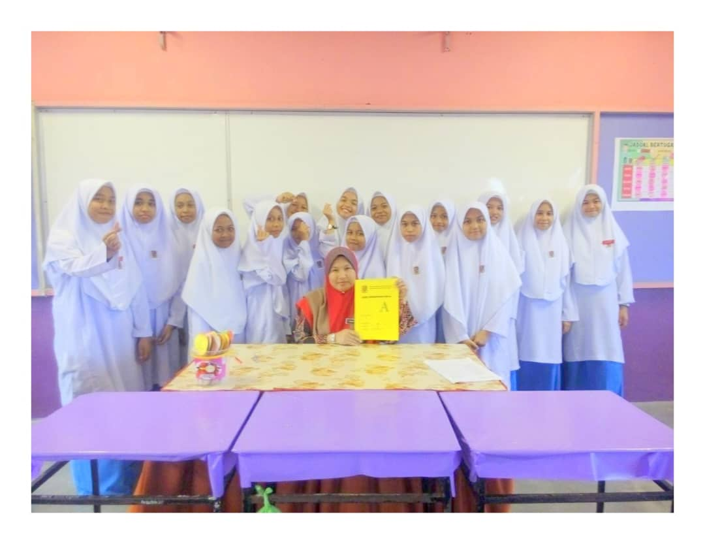
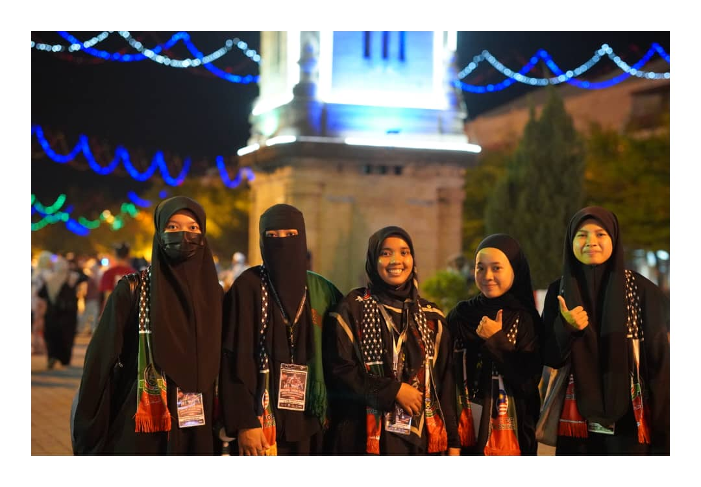
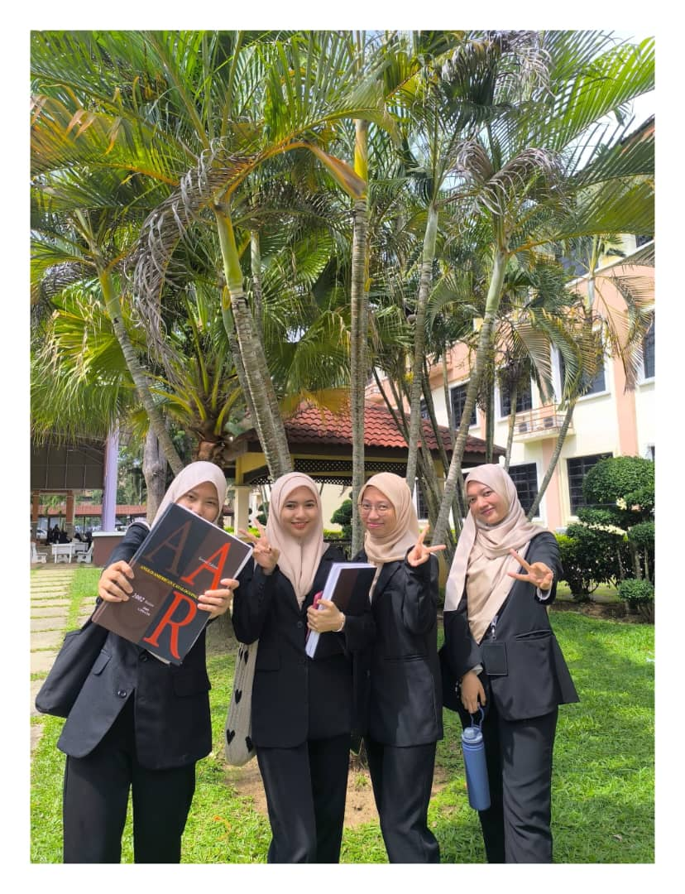
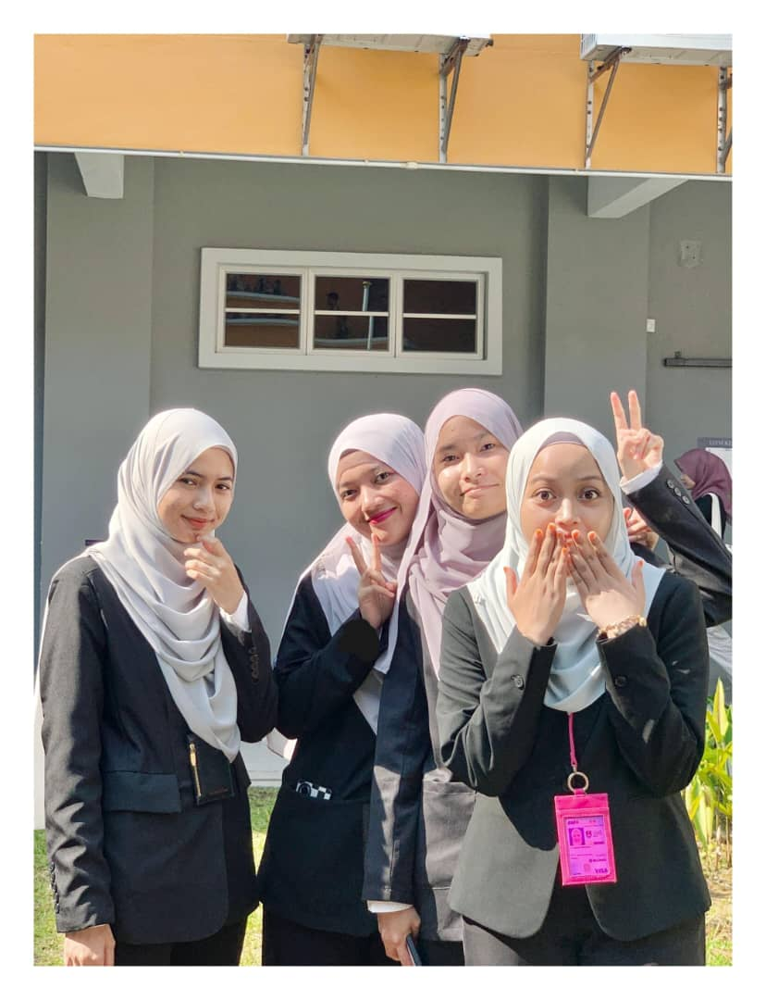

Hiii :)
MY LEARNING EDUCATION
- 2005-2006
- -Tadika Purnama
- 2007-2012
- -SK Taman Ria
- 2013-2022
- -SMK Dato'Lela Pahlawan
- 2022-Now
- -UiTM Merbok Branch Kedah
Experience and Achievement
- (2017) - During first grade, I was appointed to the KKQ Flow class (Al-Quran Skills Class)..
- (2019) - When I was in third grade, I was heavily involved with the scout uniform body's extracurricular activities. I have been awarded the National Scout Commissioner's Award Junior Scout Badge of Excellence.
- (2019) - I got 5 A in PT3.
- (2020-2022) - During fourth grade, I enrolled in a pure science stream class and received good SPM results.
- (2022-2024) - During my university days, I actively participated in the IMAN association club. In the third semester, I functioned as a program organizer organized by the Iman and Informa association clubs. Now, in semester 5, I have been granted the responsibility and trust to serve as the Exco of the Academic and Welfare Bureau in the IMAN association.Then, I had been one of the volunteer members for the "Sungai Petani Berselawat Malam Tahun Baru" program. After that, in the fifth semester, I had been to the AJK Booth Club Festival.
Picture me in high school and at UiTM.

Class 1 ARIF SMKDLP 2017.

I am one of the volunteer members for the "Sungai Petani Berselawat Malam Tahun Baru" program.

Assignment Groupmates.

After presentation day.

Be the AJK Booth Club Festival.
|